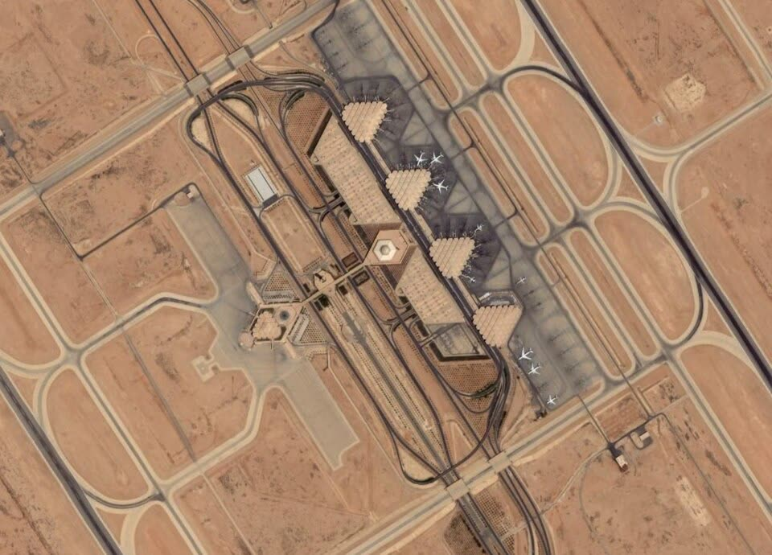

Gli USA avvertono i cittadini in Arabia Saudita: rischio di attacchi Houthi
Il coro regge
A nostro avviso la guerra è altrui, ma il conto può arrivare da noi: quattro milioni di barili al giorno passano per un oleodotto che gli Houthi dicono di aver già colpito.
Redazione Contrappunto · aggiornato il 14.11.2026


Gli Houthi sono un movimento armato dello Yemen, sostenuto dall'Iran, che dal 2014 controlla la capitale Sanaa e gran parte delle zone più popolate del paese. Dal 2015 una coalizione guidata dall'Arabia Saudita combatte per sostenere il governo yemenita riconosciuto a livello internazionale. Da settembre gli scontri sono cresciuti e gli Houthi colpiscono aeroporti, porti e impianti petroliferi sauditi. Sabato 14 novembre la missione diplomatica degli Stati Uniti in Arabia Saudita ha emesso un'allerta di sicurezza per tutto il paese.
Vedi di più: 6 parole spiegate, cosa si racconta
Cosa si raccontaPer Anadolu, Reuters, Al Jazeera e Arab News gli Houthi attaccano aeroporti e infrastrutture dell'Arabia Saudita e la coalizione intercetta missili e droni. Gli Houthi, con il portavoce Yahya Saree, dicono di colpire «oil facilities and military bases» sauditi e negano di aver preso di mira La Mecca e Medina. Non tutte le rivendicazioni hanno una conferma di Riyadh. [Anadolu Agency] [Al-Monitor (Reuters)] [Al Jazeera] [Arab News]
- Houthi (Ansar Allah)
- Movimento armato yemenita di fede sciita zaidita, definito «sostenuto dall'Iran» da The Hindu e «allineato all'Iran» da Reuters. Controlla la capitale Sanaa dal settembre 2014 (The Hindu).
- Coalizione a guida saudita
- Gruppo di paesi guidato dall'Arabia Saudita che dal marzo 2015 sostiene il governo yemenita riconosciuto (The Hindu). Il suo portavoce è il generale Turki al-Maliki (Shafaq).
- Oleodotto Est-Ovest
- Tubo di 1.200 km che porta il petrolio saudita dal centro del paese a Yanbu, sul Mar Rosso. Con lo stretto di Hormuz quasi bloccato, ci passano circa 4 milioni di barili al giorno (Al Jazeera).
- Stretto di Hormuz e Bab el-Mandeb
- Hormuz è il passaggio marittimo del Golfo, «molto ristretto» per la guerra Usa-Israele contro l'Iran (Al Jazeera). Bab el-Mandeb è il passaggio all'ingresso sud del Mar Rosso, verso cui gli Houthi sono avanzati da settembre (Reuters).
- Allerta di sicurezza
- Avviso che l'ambasciata americana manda ai suoi cittadini: non vieta di viaggiare, ma chiede prudenza. Un ordine di partenza è un'altra cosa: riguarda il personale del governo americano e le famiglie (Anadolu, Al Jazeera).
- Testate citate
- Anadolu: agenzia di Stato turca. The Hindu: quotidiano indiano. Al Jazeera: tv finanziata dallo Stato del Qatar. Arab News: quotidiano saudita in inglese. Reuters: agenzia britannica, qui ripresa da Al-Monitor. Shafaq: sito di notizie iracheno.
- Sabato 14 novembre la missione degli Stati Uniti in Arabia Saudita ha chiesto «heightened vigilance» e «extreme caution» negli aeroporti, per il rischio di attacchi degli Houthi (Anadolu).
- Il 12 novembre il Consiglio di sicurezza dell'Onu ha rinnovato per un anno le sanzioni sullo Yemen, e il Pakistan ha chiesto la fine «immediata e incondizionata» degli attacchi Houthi (The Hindu).
- Nei giorni scorsi la coalizione ha riferito di missili e droni intercettati; gli Houthi rivendicano attacchi all'aeroporto di Riyadh e a Yanbu, e Riyadh non conferma (Reuters, Shafaq).
Anadolu e The Hindu raccontano due facce dello stesso fatto: Washington avverte i suoi cittadini, il Pakistan chiede all'Onu di fermare gli Houthi. Arab News e Reuters riportano le intercettazioni della coalizione. Il racconto regge: i fatti coincidono, e gli Houthi rivendicano gli attacchi, discutendo solo i bersagli. Per l'Italia non abbiamo cifre. A nostro avviso non è una guerra italiana, ma l'interesse nostro ed europeo è chiaro: con Hormuz ristretto, 4 milioni di barili al giorno passano da un solo oleodotto. Roma e Bruxelles dovrebbero chiedere sicurezza per Yanbu e Mar Rosso, senza schierarsi, e diversificare i fornitori. [1] [2] [9] [7] [3]
La verifica punto per punto3 passaggi, 9 fonti
Qui sotto ogni cosa scritta sopra, una per una, con le fonti. Confermato: lo dice un documento originale o più fonti lette. Plausibile: lo riportano fonti serie, ma non abbiamo letto l'originale. Discordante: le fonti danno numeri diversi, e diciamo quali. Ipotesi e Opinione sono il nostro ragionamento, separato dai fatti.
Cosa è successo
Sabato 14 novembre la missione Usa in Arabia Saudita ha emesso un'allerta in tutto il paese, che chiede «heightened vigilance» per il rischio di attacchi degli Houthi e dice che gli attacchi ad aeroporti e infrastrutture «caused civilian casualties and severe travel disruptions» (Anadolu). La missione invita a prendere «extreme caution» negli aeroporti sauditi; l'aeroporto di Riyadh ha riaperto in parte il 23 ottobre e valichi di terra restano aperti (Anadolu). Non è la prima allerta: l'ambasciata a Riyadh ne aveva emessa una il 21 ottobre, lo stesso giorno in cui il Dipartimento di Stato ordinava la partenza del personale non essenziale e dei familiari (Al Jazeera). Sulla data dell'ordine le fonti non coincidono: Al Jazeera scrive 21 ottobre, Anadolu scrive che il personale doveva lasciare il paese il 23 ottobre. Giovedì 12 novembre il Consiglio di sicurezza ha rinnovato all'unanimità per un anno le sanzioni sullo Yemen; l'ambasciatore pachistano Syed Haider Shah ha chiesto la fine «immediata e incondizionata» degli attacchi Houthi e ha parlato di un processo politico guidato dagli yemeniti (The Hindu). Il 10 e 11 novembre la coalizione ha detto di aver intercettato missili Houthi diretti a Riyadh; per Reuters, un attacco di ottobre all'aeroporto di Riyadh ha ucciso 13 persone e ne ha ferite più di 300 (Al-Monitor).
Bersagli e responsabili: due versioni
Il 9 novembre l'agenzia di Stato saudita ha riferito di un attacco all'oleodotto Est-Ovest nella regione di Medina, con un «limited fire» e senza dire chi fosse stato (Al Jazeera). Il 10 novembre gli Houthi hanno detto di aver colpito l'oleodotto nella provincia di Riyadh, negando l'attacco a Medina; ripetono di non aver mai preso di mira La Mecca e Medina (Al-Monitor). L'11 novembre la coalizione ha detto di aver fermato due droni diretti verso La Mecca e il sud; il portavoce Yahya Saree ha negato, dicendo che le operazioni «targeted Saudi oil facilities and military bases», e ha rivendicato una stazione di pompaggio a Yanbu, senza conferma saudita (Shafaq, Al-Monitor). A settembre l'Arabia Saudita aveva attribuito gli attacchi all'oleodotto a droni lanciati dall'Iraq (Al Jazeera). Non c'è una fonte indipendente sul campo.
Cosa c'entra l'Italia: il petrolio
Da quando lo stretto di Hormuz è molto ristretto per la guerra Usa-Israele contro l'Iran, l'Arabia Saudita ha spostato circa 4 milioni di barili di petrolio al giorno sull'oleodotto Est-Ovest fino a Yanbu, pari a circa il 4% dell'offerta mondiale (Al Jazeera, Al-Monitor). Reuters scrive che da settembre gli Houthi sono avanzati verso Bab el-Mandeb, all'ingresso sud del Mar Rosso (Al-Monitor). Il 25 settembre il Brent è salito di oltre il 3% dopo attacchi rivendicati dagli Houthi a impianti Aramco (Al Jazeera). Non abbiamo trovato né letto dati verificati su gas, benzina o navi italiane: non li scriviamo.
Fonti9, tutte con il link
- US warns Americans in Saudi Arabia over threat of Houthi attacks (14 novembre 2026, archivio d8d28a03a3858) (Anadolu Agency) · consultata il 14.11.2026
- Pakistan calls for 'immediate' end to Houthi attacks on Saudi Arabia at UN (13 novembre 2026, archivio de489ae17001e; pagina a pagamento, testo visibile) (The Hindu) · consultata il 14.11.2026
- Saudi Arabia reports new attack on key East-West pipeline (9 novembre 2026, archivio d4c76e8e756a9) (Al Jazeera) · consultata il 14.11.2026
- US orders departure of personnel from Saudi Arabia citing Houthi threat (21 ottobre 2026, archivio d034100df0053) (Al Jazeera) · consultata il 14.11.2026
- Oil prices jump after Yemen's Houthis claim attacks on Saudi facilities (25 settembre 2026, archivio d6405beccc4bf) (Al Jazeera) · consultata il 14.11.2026
- Saudi-led coalition says it shot down Houthi missiles aimed at Riyadh (Reuters, 10 novembre 2026, archivio d5daa38b46d2b) (Al-Monitor (Reuters)) · consultata il 14.11.2026
- Saudi Arabia intercepts Houthi missiles, drones; group denies targeting Mecca (Reuters, 11 novembre 2026, archivio d573d20a1a780) (Al-Monitor (Reuters)) · consultata il 14.11.2026
- Houthis claim strikes on Riyadh airport, Yanbu (11 novembre 2026, archivio d322350e6af1a) (Shafaq News) · consultata il 14.11.2026
- Aramco building in Riyadh targeted, Saudi energy ministry says (8 novembre 2026, archivio de4c0e2bddb22) (Arab News) · consultata il 14.11.2026
Testo preparato con strumenti di intelligenza artificiale e pubblicato senza revisione umana. Come lavoriamo